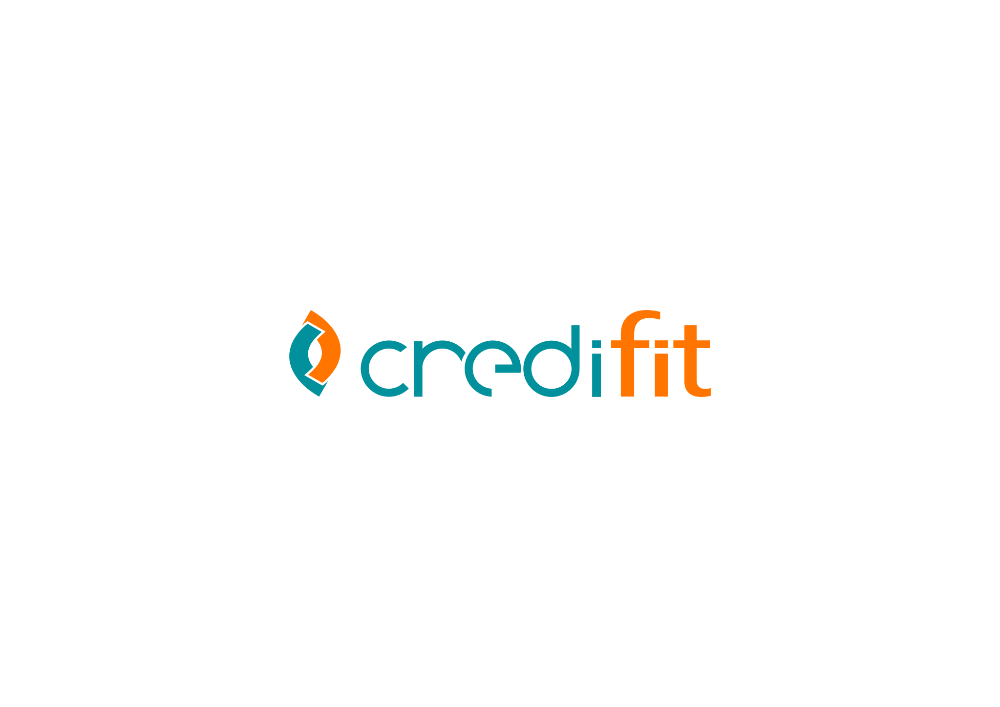
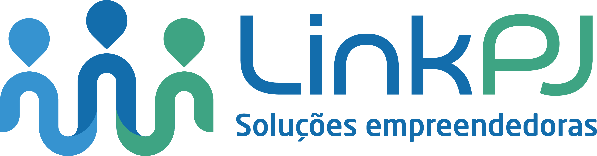

Second Brain
De Smart Notes a um Cérebro Aumentado por IA
Eduardo Sorensen
25 de Março, 2026


O Problema
 Slack
Slack Email
EmailMeetings
Docs
Código
Google Chat
 WhatsApp
WhatsApp Telegram
Telegram
"Open tasks tend to occupy our short-term memory — until they are done."
— Sonke Ahrens (Zeigarnik Effect)
Smart Notes (antes da IA)
"How to Take Smart Notes" — Sonke Ahrens
🗃
Zettelkasten
Sistema de "caixas de fichas" interconectadas. Cada nota e uma unidade de conhecimento linkada a outras.
⚛
Atomic Notes
Uma ideia por nota. Facilita recombinacao, busca e reuso do conhecimento acumulado.
🔗
Wiki-links
Conexoes bidirecionais entre notas criam uma rede de conhecimento organica e navegavel.
"If you want to learn something for the long run, you have to write it down."
— Sonke Ahrens
A Evolução: Open Brain
📝 Manual Notes
Papel, Google Docs, notas dispersas
→
🗃 Obsidian + Zettelkasten
Local-first, Markdown, wiki-links
→
🧠 Open Brain
pgvector, MCP Server, embeddings
IA como colaborador, nao substituto
"Precisamos aprender a ser ajudados pela IA, mas sem que ela nos substitua."
— Eduardo Sorensen
Arquitetura
🖥 Obsidian Desktop
- Source of truth
- 4.463 notas Markdown
- + iPhone (mobile sync)
🤖 Claude Code
- MCP Client nativo
- Transporte stdio via SSH
- 6 tools disponiveis
⟵ Git Sync (2min cron) ⟶
⟵ SSH over VPN ⟶
☁ VM GCP (e2-small)
- PostgreSQL 16 + pgvector
- Vault Watcher (chokidar)
- Embedding Service (OpenAI)
- MCP Server (TypeScript)
- WireGuard VPN
WireGuard VPN — 10.10.0.0/24
🔒 Zero Trust — No Public IP
Embedding Pipeline
📄
.md file
Nota Markdown
→
🔍
Frontmatter
Parse YAML
→
🧠
OpenAI
text-embedding-3-small
→
📐
vector(1536)
1536 dimensoes
→
🗄
pgvector
ivfflat index
Busca por Similaridade Coseno
Quanto menor o ângulo entre vetores, maior a similaridade semântica
SELECT file_path, 1 - (embedding <=> $query_vec) AS similarity
FROM vault_embeddings
ORDER BY embedding <=> $query_vec LIMIT 10;
FROM vault_embeddings
ORDER BY embedding <=> $query_vec LIMIT 10;
MCP Server & Tools
✏️
write_note
Cria ou sobrescreve notas no vault com frontmatter automatico
📖
read_note
Le o conteudo completo de uma nota pelo caminho
🗑
delete_note
Remove notas do vault e do índice pgvector
🔮
search_semantic
Busca por similaridade de embeddings (distância coseno)
🔎
search_text
Busca textual full-text + filtro por tags
🕐
list_recent
Lista notas mais recentes ordenadas por data de atualizacao
Claude Code como cliente MCP nativo — transporte stdio via SSH
Skills & Automações
/obsidian-ingest
URLs, arquivos e imagens transformados em notas estruturadas no vault com frontmatter, tags e wiki-links automaticos.
/sync-calendar
Google Calendar sincronizado com Meeting Notes. Summaries gerados via Gemini AI para cada evento.
3.577 meeting notes no vault
/zettelkasten
Transforma codebases inteiros em notas atomicas com wiki-links e tags, seguindo o metodo Zettelkasten.
Demo ao Vivo
1
Graph View no Obsidian
~2 min
2
Semantic Search via MCP
~2 min
3
Criar nota ao vivo
~2 min
4
Zettelkasten em acao
~2 min
Hora de sair dos slides...
De volta aos slides
Como foi a demo?
Em números
0
notas
0
anexos
0
arquivos totais
0
testes
0
cobertura
Próximos Passos
- Backups automatizados (pg_dump cron)
- Monitoring & alertas (Cloud Logging)
- sync-calendar como cron na VM
Obrigado!
"The richer the slip-box becomes, the richer your own thinking becomes."
— Sonke Ahrens
Perguntas?
Eduardo Sorensen